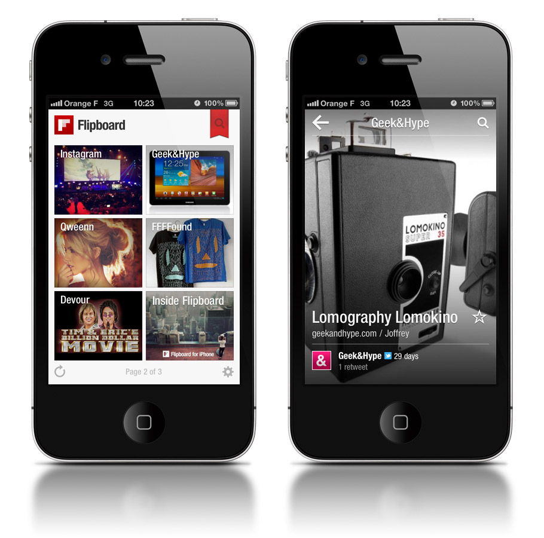
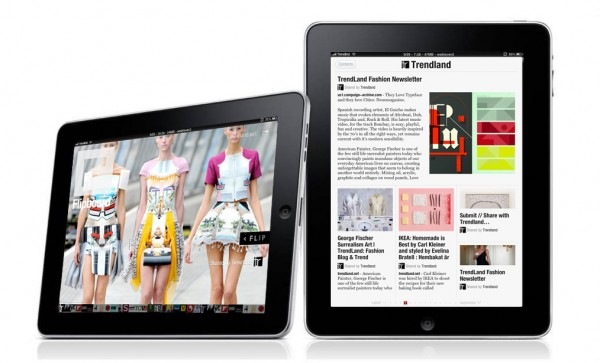

A mobile web application tech stack
There are many technical decisions to make when writing web applications. I've come back to writing modern web applications lately, and wanted to consolidate some scattered thoughts that I’ve recorded over the course of my development cycle. In particular, this post is about the set of frameworks that I found to be instrumental in developing my most recent project. I'll go over some of the most important framework types, each of which could be expanded into an article in its own right. This is not meant to be an extensive comparison of existing offerings, just a slice of technologies that I experimented with most recently.
Although my focus is on mobile first, I think that this set of technologies can be applied to web apps in general. All of my decisions and data points were made with a few requirements in mind:
- JavaScript only (CoffeeScript, Dart, are definitely worth a serious look, but cause an explosion in choice which I wanted to avoid)
- Must work well in modern browsers (iOS 5, Android 4)
Picking an MVC
The model view controller pattern has been in use in native UI app development for decades. The basic idea is to separate the data layer (storage, communication, data) from the presentation layer (UI, animation, input). There are other similar patterns such as MVVM (Model View ViewModel), but the main idea is to have well-defined separation between the presentation and data layers for cleaner code and ultimately long-term velocity:
There are tons of offerings of JavaScript model view controller frameworks. Some, such as Backbone.js and Spine.js are written in pure code, while others like Knockout.js and Angular rely on DOM data attribute binding. Relying on HTML5 data DOM attributes feels wrong for an MVC system, whose whole point is to separate view and data. This excludes the Knockout and Angular frameworks. Spine.js is easier with CoffeeScript, which we exclude based on my initial requirements.
Backbone.js has been around for longer than most (except perhaps JavaScriptMVC, seems like a dead project), and also features a growing open source community. For my app stack, I went with Backbone.js. For more information about picking an MVC, check out TodoMVC, which implements the same Todo application using different MVC frameworks. Also see this MVC framework comparison, which strongly favors the Ember.js, a relative newcomer to the scene. I haven’t yet had a chance to play with it, but it’s on my list.
Picking a templating engine
To build a serious application on the web, you inevitably build up large DOM
trees. Rather than using JavaScript APIs to manipulate the DOM, it can be much
simpler and more efficient to write HTML using a string-based template instead.
Generally speaking JS templates have evolved to use this at-first strange
convention of embedding the template content inside script tags: <script
id="my-template" type="text/my-template-language">...</script>. The basic
pattern of use for all template engines is to load the template as a string,
construct template parameters and then run the template and parameters through
the templating engine.
Backbone.js depends on Underscore.js, which ships with a somewhat limited templating engine with verbose syntax. There are other options available, including jQuery Templates, Handlebars.js, Mustache.js and many others. jQuery Templates have been deprecated by the jQuery team, so I did not consider this option. Mustache is a cross-language templating system, featuring simplicity and a deliberate decision to support as little logic as possible. Indeed, the most complex construct in Mustache is a way to iterate an array of objects. Handlebars.js builds heavily on Mustache, adding some nice features such as template precompilation and in-template expressions. For my purposes I didn’t need these extra features, and chose Mustache.js as my templating platform.
In general, my impression is that the existing templating frameworks are quite minimal and comparable in features, so the decision is largely a matter of personal preference.
Picking a CSS Framework
CSS frameworks are essential tools that extend CSS’s feature set with conveniences such as variables, a way to create hierarchical CSS selectors, and some more advanced features. This essentially creates a new language: an augmented version of CSS (let’s call it CSS++). For development ease, some frameworks implement a JavaScript CSS++ interpreter in the browser, while other frameworks let you monitor a CSS++ file and compile it whenever there are any changes made. All CSS frameworks should provide command line tool to compile CSS++ down to CSS for deployment.
As with templating languages, there are many choices all of which do very
similar things. My choice was motivated by personal syntax preference, and I
prefer SCSS because it avoids weird syntax like @. One drawback of SCSS is
that it doesn’t ship with a JavaScript interpreter (there is an unofficial one
that I haven’t tried), but does come with a command line watcher. Other similar
CSS frameworks include LESS and Stylus.
How to layout views
HTML5 provides a variety of ways to layout content, and MVC frameworks provide no opinion about which of these layout technologies to use, leaving the sometimes difficult decision to you, the developer.
Generally speaking, relative positioning is appropriate for documents, but falls apart for apps. Absolute positioning should be avoided, as should tables, clearly. Many web developers have turned to the float property to align elements, but this is suboptimal for building application views, since it’s not optimized for app-like layouts, which results in many odd problems and infamous clearfix hacks.
After much experimentation with various web layout technologies over the years, I think that a combination of fixed positioning and flexbox model is ideal for mobile web applications. I use fixed positioning for UI elements that are fixed on the screen (headers, sidebars, footers, etc). The flex box model is great for laying out stacked views on the page (horizontally or vertically). It’s the only CSS box model explicitly optimized for interface design, quite similar to Android’s LinearLayout manager. For more information about the flexbox model, read Paul's article and note that this spec is being replaced by a new, non-backwards compatible version.
Adaptive Web Apps
One final section on this matter: I’m a strong proponent of creating device-specific user interfaces. This means re-writing parts of your view code for different form factors. Luckily, the MVC pattern makes it relatively easy to reuse a single model for multiple views (eg. tablet and phone).
Flipboard for iOS demonstrates this idea very well, giving tablet and phone users a highly tailored experience for each device form factor.
 The phone UI is optimized for vertical swipes, allowing single hand use.
 Tablet UI works well for two hands holding the device on opposite sides.
Input considerations
On mobile, the main way users interact with your application is by touching the screen with their fingers. This is quite different from mouse-based interaction, since there are 9 additional points to track on the screen, which means developers need to move away from mouse events when writing mobile apps. In addition, mouse events on mobile have the problem of clicks being delayed by 300ms (there is a well-known touch-based workaround). For more information about using these events in mobile browsers, see my touch events article.
It’s not enough to just s/mousedown/touchstart/ all of your event handlers.
There is a completely new set of gestures that users have come to expect on
touch devices, such as swipes to, for example, navigate through lists of
images. Though Apple has a little-known gestures API, there is no open spec for
doing gesture detection on the web. We really need a JavaScript library to do
gesture detection, for some of the more common gestures.
How to make it work offline
For an app to work offline, you need two things to be true:
- Assets are available (via AppCache, Filesystem API, etc)
- Data is available (via LocalStorage, WebSQL, IndexedDB, etc)
In practice, building offline apps on the web is a difficult problem. Generally speaking offline functionality should be built into your app from the beginning. It’s especially difficult to offline-ify an existing web application without significant code rewriting. Additionally, there are often unknown storage limits for various offline technologies, and undefined behavior for what happens when those limits are exceeded. Finally, there are problems with technologies in the offline technology stack, most notably AppCache, as I outlined in a previous post.
A very interesting approach to write truly offline-capable apps is to go
“offline first”. In other words, write everything as if you have no internet
connection, and implement a syncing layer that synchronizes data when an
internet connection exists. In the Backbone.js MVC model, this can fit nicely
as a custom Backbone.sync adapter.
Unit testing
It’s hard to unit test your UI. However, since you’re using an MVC, the model is completely isolated from the UI and as a result, easy to test. QUnit is quite a nice option, especially because it allows to unit test asynchronous code using it’s start() and stop() methods.
Signing off
To summarize, I used Backbone.js for MVC, Mustache.js for templating, SCSS for a CSS framework, CSS Flexbox to render views, custom touch events and QUnit for unit testing to write my mobile web application. For offline support, I’m still experimenting with various technologies and will hopefully follow up with more information a future post. While I strongly believe in the need for each class of tool (eg. MVC) outlined here, I also believe that many of the specific technologies I described here are interchangeable (eg. Handlebars and Mustache).
One more thing: yesterday (on January 17th, 2012), Thorax was announced. This is a Backbone-based set of libraries very similar in spirit to what I describe in this post. I've yet to investigate it in any depth, but the name is great :)
Use a similar set of frameworks? Have a personal favorite? Think I’m missing an important type of framework? Let me know!